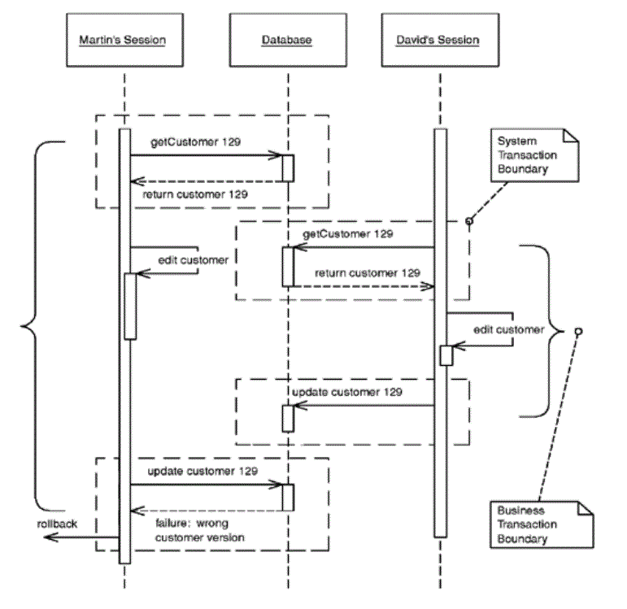

Optimistic Offline Lock
Often a business transaction executes across a series of system transactions. Once outside the confines of a single system transaction, we can't depend on our database manager alone to ensure that the business transaction will leave the record data in a consistent state. Data integrity is at risk once two sessions begin to work on the same records and lost updates are quite possible. Also, with one session editing data that another is reading an inconsistent read becomes likely.
Optimistic Offline Locksolves this problem by validating that the changes about to be committed by one session don't conflict with the changes of another session. A successful pre-commit validation is, in a sense, obtaining a lock indicating it's okay to go ahead with the changes to the record data. So long as the validation and the updates occur within a single system transaction the business transaction will display consistency. Whereas Pessimistic Offline Lock(426)assumes that the chance of session conflict is high and therefore limits the system's concurrency, Optimistic Offline Lockassumes that the chance of conflict is low. The expectation that session conflict isn't likely allows multiple users to work with the same data at the same time.
How It Works
An Optimistic Offline Lockis obtained by validating that, in the time since a session loaded a record, another session hasn't altered it. It can be acquired at any time but is valid only during the system transaction in which it is obtained. Thus, in order that a business transaction not corrupt record data it must acquire an Optimistic Offline Lockfor each member of its change set during the system transaction in which it applies changes to the database.
The most common implementation is to associate a version number with each record in your system. When a record is loaded that number is maintained by the session along with all other session state. Getting the Optimistic Offline Lockis a matter of comparing the version stored in your session data to the current version in the record data. Once the verification succeeds, all changes, including an increment of the version, can be committed. The version increment is what prevents inconsistent record data, as a session with an old version can't acquire the lock.
With an RDBMS data store the verification is a matter of adding the version number to the criteria of any SQL statements used to update or delete a record. A single SQL statement can both acquire the lock and update the record data. The final step is for the business transaction to inspect the row count returned by the SQL execution. A row count of 1 indicates success; 0 indicates that the record has been changed or deleted. With a row count of 0 the business transaction must rollback the system transaction to prevent any changes from entering the record data. At this point the business transaction must either abort or attempt to resolve the conflict and retry.
In addition to a version number for each record, storing information as to who last modified a record and when can be quite useful when managing concurrency conflicts. When informing a user of a failed update due to a concurrency violation a proper application will tell when the record was altered and by whom. It's a bad idea to use the modification timestamp rather than a version count for your optimistic checks because system clocks are simply too unreliable, especially if you're coordinating across multiple servers.
In an alternative implementation the where clause in the update includes every field in the row. The advantage here is that you can use the where clause without using some form of version field, which can be handy if you can't add a version field by altering the database tables. The problem is that this complicates the UPDATE statement with a potentially large where clause, which may also be a performance impact depending on how clever the database is about using the primary key index.

Often implementing Optimistic Offline Lockis left at including the version in UPDATE and DELETE statements, but this fails to address the problem of an inconsistent read. Think of a billing system that creates charges and calculates appropriate sales tax. A session creates the charge and then looks up the customer's address to calculate the tax on it, but during the charge generation session a separate customer maintenance session edits the customer's address. As tax rates depend on location, the rate calculated by the charge generation session might be invalid, but since the charge generation session didn't make any changes to the address the conflict won't be detected.
There's no reason why Optimistic Offline Lockcan't be used to detect an inconsistent read. In the example above the charge generation session needs to recognize that its correctness depends on the value of the customer's address. It therefore should perform a version check on the address as well, perhaps by adding the address to the change set or maintaining a separate list of items to be version-checked. The latter requires a bit more work to set up, but results in code that more clearly states its intent. If you're checking for a consistent read simply by rereading the version rather than an artificial update, be especially aware of your system transaction isolation level. The version reread will only work with repeatable read or stronger isolation. Anything weaker requires an increment of the version.
A version check might be overkill for certain inconsistent read problems. Often a transaction depends only on the presence of a record or maybe the value of only one of its fields. In such a case you might improve your system's liveliness by checking conditions rather than the version, as fewer concurrent updates will result in the failure of competing business transactions. The better you understand your concurrency issues, the better you can manage them in your code.
The Coarse-Grained Lock(438)can help with certain inconsistent read conundrums by treating a group of objects as a single lockable item. Another option is to simply execute all of the steps of the problematic business transaction within a long-running transaction. The ease of implementation might prove worth the resource hit of using a few long transactions here and there.
Detection of an inconsistent read gets a bit difficult when your transaction is dependent on the results of a dynamic query rather than the reading of specific records. It's possible for you to save the initial results and compare them to the results of the same query at commit time as a means of obtaining an Optimistic Offline Lock.
As with all locking schemes, Optimistic Offline Lockby itself doesn't provide adequate solutions to some of the trickier concurrency and temporal issues in a business application. I can't stress enough that in a business application concurrency management is as much a domain issue as it is a technical one. Is the customer address scenario above really a conflict? It might be okay that I calculated the sales tax with an older version of the customer, but which version should I actually be using? This is a business issue. Or consider a collection. What if two sessions simultaneously add items to a collection? The typical Optimistic Offline Lock scheme won't prevent this even though it might very well be a violation of business rules.
There's one system using Optimistic Offline Locksthat we all should be familiar with: source code management (SCM). When an SCM system detects a conflict between programmers it usually can figure out the correct merge and retry the commit. A quality merge strategy makes Optimistic Offline Lockvery powerful not only because the system's concurrency is quite high but because users rarely have to redo any work. Of course, the big difference between an SCM system and an enterprise business application is that the SCM must implement only one type of merge while the business system might implement hundreds. Some might be of such complexity that they're not worth the cost of coding. Others might be of such value to the business that the merge should be coded by all means. Despite rarely being done, the merging of business objects is possible. In fact, merging business data is a pattern unto its own. I'll leave it at that rather than butcher the topic, but do understand the power that merging adds to Optimistic Offline Lock.
Optimistic Offline Lockonly lets us know during the last system transaction if a business transaction will commit. But it's occasionally useful to know earlier if a conflict has occurred. For this you can provide a checkCurrentmethod that checks if anyone else has updated the data. It can't guarantee that you won't get a conflict, but it may be worthwhile to stop a complicated process if you can tell in advance that it won't commit. Use this checkCurrentat any time that failing early may be useful, but remember that it never guarantees that you won't fail at commit time.
When to Use It
Optimistic concurrency management is appropriate when the chance of conflict between any two business transactions is low. If conflicts are likely it's not user friendly to announce one only when the user has finished his work and is ready to commit. Eventually he'll assume the failure of business transactions and stop using the system. Pessimistic Offline Lock(426)is more appropriate when the chance of conflict is high or the expense of a conflict is unacceptable.
As optimistic locking is much easier to implement and not prone to the same defects and runtime errors as a Pessimistic Offline Lock(426),consider using it as the default approach to business transaction conflict management in any system you build. The pessimistic version works well as a complement to its optimistic counterpart, so rather than asking when to use an optimistic approach to conflict avoidance, ask when the optimistic approach alone isn't good enough. The correct approach to concurrency management will maximize concurrent access to data while minimizing conflicts.
Pessimistic Offline Lock
Since offline concurrency involves manipulating data for a business transaction that spans multiple requests, the simplest approach would seem to be having a system transaction open for the whole business transaction. Sadly, however, this doesn't always work well because transaction systems aren't geared to work with long transactions. For that reason you have to use multiple system transactions, at which point you're left to your own devices to manage concurrent access to your data.
The first approach to try is Optimistic Offline Lock(416).However, that pattern has its problems. If several people access the same data within a business transaction, one of them will commit easily but the others will conflict and fail. Since the conflict is only detected at the end of the business transaction, the victims will do all the transaction work only to find at the last minute that the whole thing will fail and their time will have been wasted. If this happens a lot on lengthy business transactions the system will soon become very unpopular. Pessimistic Offline Lockprevents conflicts by avoiding them altogether. It forces a business transaction to acquire a lock on a piece of data before it starts to use it, so that, most of the time, once you begin a business transaction you can be pretty sure you'll complete it without being bounced by concurrency control.
How It Works
You implement Pessimistic Offline Lockin three phases: determining what type of locks you need, building a lock manager, and defining procedures for a business transaction to use locks. Additionally, if you're using Pessimistic Offline Lockas a complement to Optimistic Offline Lock(416)you need to determine which record types to lock.
As for lock types, the first option is an exclusive write lock,which require only that a business transaction acquire a lock in order to edit session data. This avoids conflict by not allowing two business transactions to make changes to the same record simultaneously. What this locking scheme ignores is the reading of data, so if it's not critical that a view session have the most recent data this strategy will suffice. If it becomes critical that a business transaction must always have the most recent data, regardless of its intention to edit, use the exclusive read lock.This requires that a business transaction acquire a lock simply to load the record. Clearly such a strategy has the potential to severely restrict a system's concurrency. For most enterprise systems the exclusive write lock will afford much more concurrent record access than this lock will.
A third strategy combines the two lock types to provide the restrictive locking of the exclusive read lock as well as the increased concurrency of the exclusive write lock. Called the read/write lock,it's a bit more complicated than the first two. The relationship of the read and write locks is the key to getting the best of both worlds:
Read and write locks are mutually exclusive. A record can't be write-locked if any other business transaction owns a read lock on it; it can't be read-locked if any other business transaction owns a write lock on it.
Concurrent read locks are acceptable. The existence of a single read lock prevents any business transaction from editing the record, so there's no harm in allowing any number of sessions as readers once one has been allowed to read.
Allowing multiple read locks is what increases system concurrency. The downside of this scheme is that it's a bit nasty to implement and presents more of a challenge for domain experts to wrap their heads around when they're modeling the system.
In choosing the correct lock type think about maximizing system concurrency, meeting business needs, and minimizing code complexity. Also keep in mind that the locking strategy must be understood by domain modelers and analysts. Locking is not just a technical problem; the wrong lock type, simply locking every record, or locking the wrong types of records can result an ineffective Pessimistic Offline Lockstrategy. An ineffective Pessimistic Offline Lockstrategy is one that doesn't prevent conflict at the onset of the business transaction or that degrades the concurrency of your multi-user system such that it seems more like singleuser system. The wrong locking strategy can't be saved by a proper technical implementation. In fact, it's not a bad idea to include Pessimistic Offline Lockin your domain model.
Once you've decided upon your lock type, define your lock manager. The lock manager's job is to grant or deny any request by a business transaction to acquire or release a lock. To do its job it needs to know what's being locked as well as the intended owner of the lock—the business transaction. It's quite possible that your concept of a business transaction isn't some thingthat can be uniquely identified, which makes it a bit difficult to pass a business transaction to the lock manager. In this case consider your concept of a session, as you're more likely to have a session object at your disposal. The terms "session" and "business transaction" are fairly interchangeable. As long as business transactions execute serially within a session the session will be fine as a Pessimistic Offline Lockowner. The code example should shed some light on this idea.
The lock manager shouldn't consist of much more than a table that maps locks to owners. A simple one might wrap an in-memory hash table, or it might be a database table. Whatever, you must have one and only one lock table, so if it's in memory be sure to use a singleton [Gang of Four]. If your application server is clustered, an in-memory lock table won't work unless it's pinned to a single server instance. The databasebased lock manager is probably more appropriate once you're in a clustered application server environment.
The lock, whether implemented as an object or as SQL against a database table, should remain private to the lock manager. Business transactions should interact only with the lock manager, never with a lock object. Now it's time to define the protocol according to which a business transaction must use the lock manager. This protocol has to include what to lock and when, when to release a lock, and how to act when a lock can't be acquired.
What to lock depends upon when to lock, so let's look at when first. Generally, the business transaction should acquire a lock before loading the data, as there's not much point in acquiring a lock without a guarantee that you'll have the latest version of the locked item. Since we're acquiring locks within a system transaction, however, there are circumstances where the order of the lock and load won't matter. Depending on your lock type, if you're using serializable or repeatable read transactions, the order in which you load objects and acquire locks might not matter. An option is to perform an optimistic check on an item after you acquire the Pessimistic Offline Lock.You should be very sure that you have the latest version of an object after you've locked it, which usually translates to acquiring the lock before loading the data.
Now, what are we locking? It seems that we're locking objects or records or just about anything, but what we usually lock is actually the ID, or primary key, that we use to find those objects. This allows us to obtain the lock before we load them. Locking the object works fine so long as it doesn't force you to break the rule about an object's being current after you acquire its lock.
The simplest rule for releasing locks is to do it when the business transaction completes. Releasing a lock prior to completion might be allowable, depending on your lock type and your intention to use that object again within the transaction. Still, unless you have a very specific reason to release early, such as a particularly nasty system liveliness issue, stick to doing it upon completion of the business transaction.
The easiest course of action for a business transaction that can't acquire a lock is to abort. The user should find this acceptable since Pessimistic Offline Lockshould result in failure rather early in the transaction. The developer and designer can certainly help the situation by not waiting until late in the transaction to acquire a particularly contentious lock. If at all possible acquire all of your locks before the user begins work. For any given item that you intend to lock, access to the lock table must by serialized. With an in-memory lock table it's easiest to serialize access to the entire lock manager with whatever constructs your programming language provides. If you need concurrency greater than this affords, be aware you are entering complex territory.
If the lock table is stored in a database the first rule, of course, is to interact with it within a system transaction. Take full advantage of the serialization capabilities that a database provides. With the exclusive read and exclusive write locks serialization is a simple matter of having the database enforce a uniqueness constraint on the column storing the lockable item's ID. Storing read/write locks in a database makes things a bit more difficult since the logic requires reads of the lock table in addition to inserts and so it becomes imperative to avoid inconsistent reads. A system transaction with an isolation level of serializable provides ultimate safety as it guarantees no inconsistent reads. Using serializable transactions throughout our system might get us into performance trouble, but a separate serializable system transaction for lock acquisition and a less strict isolation level for other work might ease this problem. Another option is to investigate whether a stored procedure might help with lock management. Concurrency management can be tough, so don't be afraid to defer to your database at key moments.
The serial nature of lock management screams performance bottleneck. A big consideration here is lock granularity, as the fewer locks required the less of a bottleneck you'll have. A Coarse-Grained Lock(438)can address lock table contention.
With a system transaction pessimistic locking scheme, such as "SELECT FOR UPDATE…" or entity EJBs, deadlock is a distinct possibility because these locking mechanisms will wait until a lock becomes available. Think of deadlock this way. Two users need resources A and B. If one gets the lock on A and the other gets the lock on B, both transactions might sit and wait forever for the other lock. Given that we're spanning multiple system transactions, waiting for a lock doesn't make much sense, especially since a business transaction might take 20 minutes. Nobody wants to wait for those locks. And this is good because coding for a wait involves timeouts and quickly gets complicated. Simply have your lock manager throw an exception as soon as a lock is unavailable. This removes the burden of coping with deadlock.
A final requirement is managing lock timeouts for lost sessions. If a client machine crashes in the middle of a transaction that lost transaction is unable to complete and release any owned locks. This is a big deal for a Web application where sessions are regularly abandoned by users. Ideally you'll have a timeout mechanism managed by your application server rather than make your application handle timeouts. Web application servers provide an HTTP session for this. Timeouts can be implemented by registering a utility object that releases all locks when the HTTP session becomes invalid. Another option is to associate a timestamp with each lock and consider invalid any lock older than a certain age.
When to Use It
Pessimistic Offline Lockis appropriate when the chance of conflict between concurrent sessions is high. A user should never have to throw away work. Locking is also appropriate when the cost of a conflict is too high regardless of its likelihood. Locking every entity in a system will almost surely create tremendous data contention problems, so remember that Pessimistic Offline Lockis very complementary to Optimistic Offline Lock(416)and only use Pessimistic Offline Lockwhere it's truly required.
If you have to use Pessimistic Offline Lock,you should also consider a long transaction. Long transactions are never a good thing, but in some situations they may be no more damaging than Pessimistic Offline Lockand much easier to program. Do some load testing before you choose.
Don't use these techniques if your business transactions fit within a single system transaction. Many system transaction pessimistic locking techniques ship with the application and database servers you're already using, among them the "SELECT FOR UPDATE" SQL statement for database locking and the entity EJB for application server locking. Why worry about timeouts, lock visibility, and such, when there's no need to? Understanding these locking types can certainly add a lot of value to your implementation of Pessimistic Offline Lock. Understand, though, that the inverse isn't true! What you read here won't prepare you to write a database manager or transaction monitor. All the offline locking techniques presented in this book depend on your system having a real transaction monitor of its own.